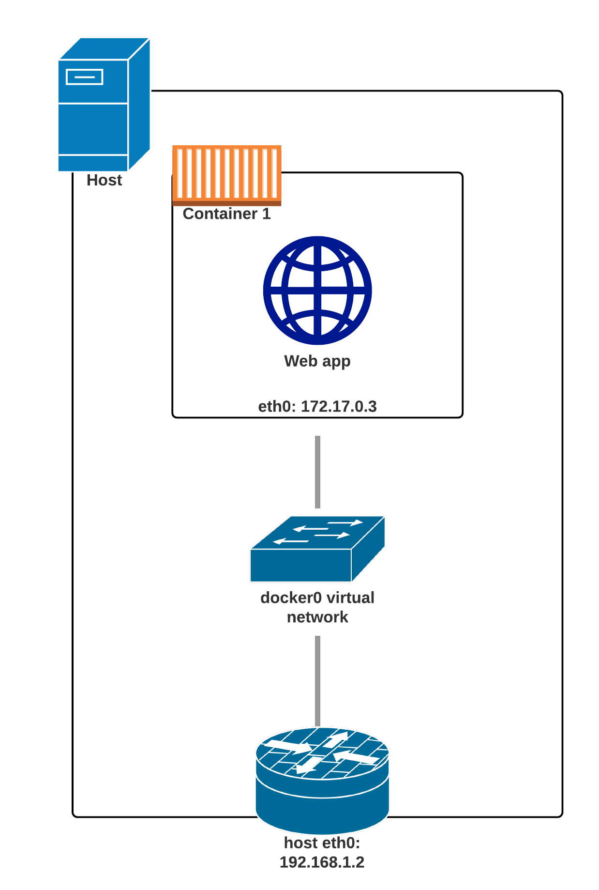
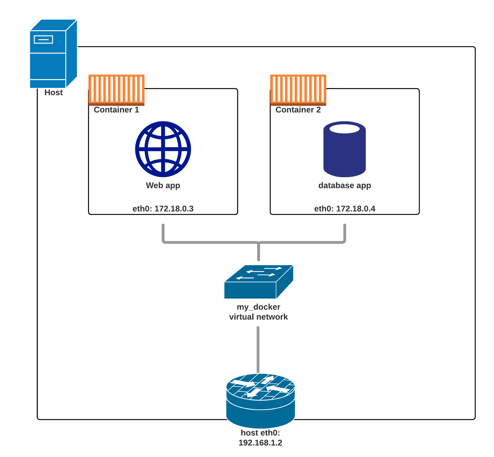
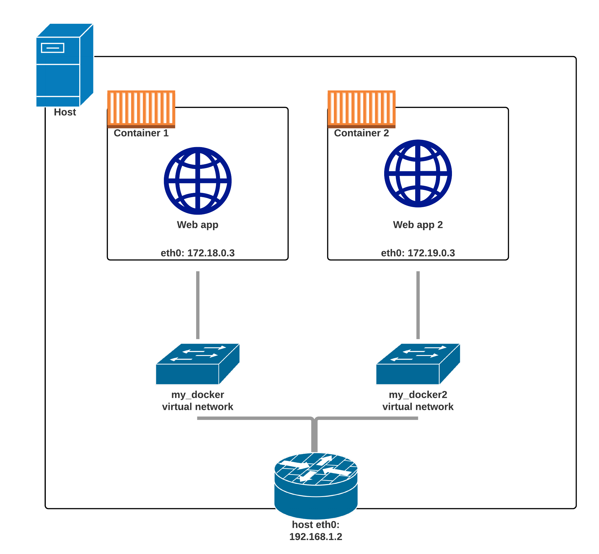

Container stacks with docker-compose
FDI-DOKR Video lesson
# What's a container network? - <span class="fragment">**Virtual switch**</span> - <span class="fragment">Can be **local** or **span across engines**</span> - <span class="fragment">Has a **subnet**</span> - <span class="fragment">**Allocates IP addresses** automatically</span> - <span class="fragment">**Containers can be named** on the network</span>



# Demo: creating a network ```bash docker network create ... docker run --net ... --name ... ```
# Network aliases ```bash docker run --net-alias ... ``` - <span class="fragment">You **can't share** the same name between containers.</span> - <span class="fragment">Even if they're in **different networks**.</span>
# Demo: using aliases
# Demo: connecting after the fact
# Customize your networks - <span class="fragment">"--internal" (no default gateway)</span> - <span class="fragment">"--gateway" (set the gw)</span> - <span class="fragment">"--subnet" (in CIDR)</span> - <span class="fragment">"--ip-range" (addresses to allocate)</span> - <span class="fragment">"--aux-address" (reserve addresses)</span>
# Conclusion - <span class="fragment">How to use docker networks.</span> - <span class="fragment">Can be used to separate our container stacks.</span> - <span class="fragment">Always **refer to the docs** for further details.</span>